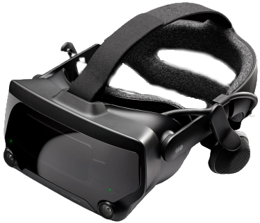

The Valve Index might be one of the best VR headsets yet released, but it’s brought some of VR’s most annoying aspects along for the ride. Setting it up can be painful, updates can cause connection issues, and you may find a new error the next time you go to use it. But, if you can look past those issues, this is a really good VR headset. Its higher-resolution screen and better refresh rate allowed us to use it for longer periods of time without discomfort, and the Index Controllers are a real step up from the ones that ship with the Vive.
But square all of these performance improvements against the headset’s price tag, and it's a lot of money to pay for a piece of hardware that isn’t absolutely perfect – especially when Oculus has a great VR headset of its own (the Oculus Quest) that’s available at less than half the cost of the Index.
Around the house, there’s no doubt the Valve Index will be our default VR headset going forward. It’s a significant upgrade to the HTC Vive, and runs much smoother than the Vive Pro, a powerful VR headset that really struggled to deliver on the promise of high-end VR. Whether it’s a better all-around headset than the Oculus Quest, however, is up for debate; the Valve Index has the better specs, but Quest has the convenience. Ultimately, which one you choose depends on the experience you want... and how much money you have in the bank.